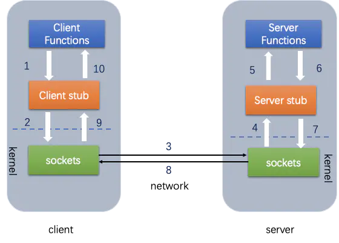
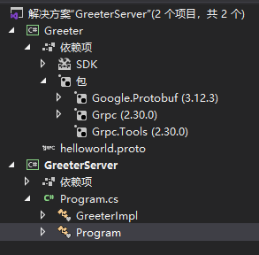
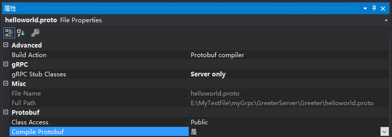

什么是RPC
之前只知道IPC，是指进程间通信(Inter Process Communication)，至少两个进程或线程间传送数据或信号的一些技术或方法，RPC和IPC类似，百科解释RPC（Remote Procedure Call）为远程过程调用，简单理解为，就是像调用本地函数一样调用远程函数，例如，有两台服务器A,B，一个应用部署在A服务器上，想要调用B服务器上的函数和方法，由于不在一个内存空间，不能直接调用，需要通过网络来表达调用的语义和传达调用的数据。
RPC原理
首先客户端需要告诉服务器，需要调用的函数，这里函数和进程ID存在一个映射，客户端远程调用时，需要查一下函数，找到对应的ID，然后执行函数的代码。
客户端需要把本地参数传给远程函数，本地调用的过程中，直接压栈即可，但是在远程调用过程中不再同一个内存里，无法直接传递函数的参数，因此需要客户端把参数转换成字节流，传给服务端，然后服务端将字节流转换成自身能读取的格式，是一个序列化和反序列化的过程。
数据准备好了之后，网络传输层需要把调用的ID和序列化后的参数传给服务端，然后把计算好的结果序列化传给客户端，因此TCP层即可完成上述过程，gRPC中采用的是HTTP2协议。

RPC框架对比
Dubbo 是阿里巴巴公司开源的一个Java高性能优秀的服务框架，使得应用可通过高性能的RPC 实现服务的输出和输入功能，可以和Spring框架无缝集成。不过，略有遗憾的是，据说在淘宝内部，dubbo由于跟淘宝另一个类似的框架HSF（非开源）有竞争关系，导致dubbo团队已经解散，反到是当当网的扩展版本Dubbox仍在持续发展，墙内开花墙外香。Dubbox和Dubbo本质上没有区别，名字的含义扩展了Dubbo而已，以下扩展出来的功能，也是选择Dubbox很重要的考察点。
Motan 是新浪微博开源的一个Java框架。它诞生的比较晚，起于2013年，2016年5月开源。Motan 在微博平台中已经广泛应用，每天为数百个服务完成近千亿次的调用。与Dubbo相比，Motan在功能方面并没有那么全面，也没有实现特别多的扩展。用的人比较少，功能和稳定性有待观望。对跨语言调用支持较差，主要支持java。
Hessian 采用的是二进制RPC协议，适用于发送二进制数据。但本身也是一个Web Service框架对RPC调用提供支持，功能简单，使用起来也方便。基于Http协议进行传输。通过Servlet提供远程服务。通过Hessain本身提供的API来发起请求。响应端根据Hessian提供的API来接受请求。
rpcx 是Go语言生态圈的Dubbo， 比Dubbo更轻量，实现了Dubbo的许多特性，借助于Go语言优秀的并发特性和简洁语法，可以使用较少的代码实现分布式的RPC服务。
gRPC 是Google开发的高性能、通用的开源RPC框架，其由Google主要面向移动应用开发并基于HTTP/2协议标准而设计，基于ProtoBuf(Protocol Buffers)序列化协议开发，且支持众多开发语言。本身它不是分布式的，所以要实现上面的框架的功能需要进一步的开发。
thrift 是Apache的一个跨语言的高性能的服务框架，也得到了广泛的应用。
| 功能 | Hessian | Montan | rpcx | gRPC | Thrift | Dubbo | Dubbox | Spring Cloud |
|---|---|---|---|---|---|---|---|---|
| 开发语言 | 跨语言 | Java | Go | 跨语言 | 跨语言 | Java | Java | Java |
| 分布式(服务治理) | × | √ | √ | × | × | √ | √ | √ |
| 多序列化框架支持 | hessian | √(支持Hessian2、Json,可扩展) | √ | × 只支持protobuf) | ×(thrift格式) | √ | √ | √ |
| 多种注册中心 | × | √ | √ | × | × | √ | √ | √ |
| 管理中心 | × | √ | √ | × | × | √ | √ | √ |
| 跨编程语言 | √ | ×(支持php client和C server) | × | √ | √ | × | × | × |
| 支持REST | × | × | × | × | × | × | √ | √ |
| 关注度 | 低 | 中 | 低 | 中 | 中 | 中 | 高 | 中 |
| 上手难度 | 低 | 低 | 中 | 中 | 中 | 低 | 低 | 中 |
| 运维成本 | 低 | 中 | 中 | 中 | 低 | 中 | 中 | 中 |
| 开源机构 | Caucho | Apache | Apache | Alibaba | Dangdang | Apache |
gRPC简介
gRPC是可以在任何环境中运行的现代开源高性能RPC框架。它可以通过可插拔的支持来有效地连接数据中心内和跨数据中心的服务，以实现负载平衡，跟踪，运行状况检查和身份验证。它也适用于分布式计算的最后一英里，以将设备，移动应用程序和浏览器连接到后端服务。
在gRPC中，客户端应用程序可以直接在其他计算机上的服务器应用程序上调用方法，就好像它是本地对象一样，从而使您更轻松地创建分布式应用程序和服务。与许多RPC系统一样，gRPC围绕定义服务的思想，指定可通过其参数和返回类型远程调用的方法。在服务器端，服务器实现此接口并运行gRPC服务器以处理客户端调用。在客户端，客户端具有一个存根（在某些语言中仅称为客户端），提供与服务器相同的方法。

从Google内部的服务器到您自己的台式机，gRPC客户端和服务器都可以在各种环境中运行并相互通信，并且可以使用gRPC支持的任何语言编写。因此，例如，您可以使用Go，Python或Ruby的客户端轻松地用Java创建gRPC服务器。此外，最新的Google API的接口将具有gRPC版本，可让您轻松地在应用程序中内置Google功能。
Protobuf
在写gPRC前还需要知道Protobuf，Protocol Buffer的翻译为协议缓冲区， 是Google的与语言无关，与平台无关，可扩展的机制，用于对结构化数据进行序列化（例如XML），但更小，更快，更简单。您定义要一次构造数据的方式，然后可以使用生成的特殊源代码轻松地使用各种语言在各种数据流中写入和读取结构化数据。
看一个非常简单的例子。假设要定义一个搜索请求消息格式，其中每个搜索请求都有一个查询字符串，您感兴趣的特定结果页面以及每页结果数量。这是.proto用于定义消息类型的文件。
1 | syntax = "proto3"; |
文件的第一行指定正在使用proto3语法：如果不这样做，则协议缓冲区编译器将假定您正在使用proto2。这必须是文件的第一行，非空，非注释行。
所述SearchRequest消息定义指定了三个字段（名称/值对），一个用于每条数据要在此类型的消息包括。每个字段都有一个名称和类型。
.proto文件最终生成什么
当你使用protoc来编译一个.proto文件的时候，编译器将利用你在文件中定义的类型生成你打算使用的语言的代码文件。生成的代码包括getting setting 接口和序列化，反序列化接口。
- 对于C ++，编译器会从每个.proto文件生成一个.h和一个.cc文件，并为您文件中描述的每种消息类型提供一个类。
- 对于Java，编译器生成一个.java文件，其中包含每种消息类型的类，以及Builder用于创建消息类实例的特殊类。
- Python有点不同 - Python编译器生成一个模块，其中包含每个消息类型的静态描述符，然后，用一个元类在运行时创建必要的Python数据访问类。
- 对于Go，编译器会为.pb.go文件中的每种消息类型生成一个类型的文件。
- 对于Ruby，编译器生成一个.rb包含消息类型的Ruby模块的文件。
- 对于Objective-C，编译器从每个.proto文件生成一个pbobjc.h和一个pbobjc.m文件，其中包含文件中描述的每种消息类型的类。
- 对于C＃，编译器会从每个.proto文件生成一个.cs文件，其中包含文件中描述的每种消息类型的类。
gPRC的HelloWord
记录使用python的gRPC
安装gPRC和gRPC工具
1 | $ python -m pip install grpcio |
gRPC工具包括协议缓冲区编译器protoc和用于根据.proto服务定义生成服务器和客户端代码的特殊插件。
首先新建一个protos的文件夹编写helloworld.proto1
2
3
4
5
6
7
8
9
10
11
12
13
14
15
16
17
18
19
20
21
22
23
24
25#protos\helloworld.proto
syntax = "proto3";
option java_multiple_files = true;
option java_package = "io.grpc.examples.helloworld";
option java_outer_classname = "HelloWorldProto";
option objc_class_prefix = "HLW";
package helloworld;
// The greeting service definition.
service Greeter {
// Sends a greeting
rpc SayHello (HelloRequest) returns (HelloReply) {}
}
// The request message containing the user's name.
message HelloRequest {
string name = 1;
}
// The response message containing the greetings
message HelloReply {
string message = 1;
}
接下来，我们需要生成应用程序使用的gRPC代码。
1 | $ python -m grpc_tools.protoc -I./protos --python_out=. --grpc_python_out=. ./protos/helloworld.proto |
目录下会生成两个文件
helloworld_pb2.py
helloworld_pb2_grpc.py
然后我们就可以调用这两个文件的生成的接口了，
在Server端定义接口的实现
1 | # greeter_server.py |
Client端调用远程方法
1 | # greeter_client.py |
1 | 首先启动server |
跨语言调用
gRPC是支持不同语言调用的，C#写一个Server，用python的Client调用。
首先用Visual Studio新建一个工程，添加Greeter和GreeterServer两个项目

Greeter添加Grpc的NuGet包
Goggle.Protobuf
Grpc
Grpc.Tools
选择.proto的properties，build改为Protobuf

现在选择Greeter项目，生成会build出 Helloworld.cs 和 HelloworldGrpc.cs两个文件。
编写GreeterServer的Program.cs，记得要引用Greeter
1 | // GreeterServer/Program.cs |
然后就可以构建并执行C#的Server了
1 | > dotnet build Greeter.sln |
再执行之前用python写的client1
2python greeter_client.py
Greeter client received: Hello you